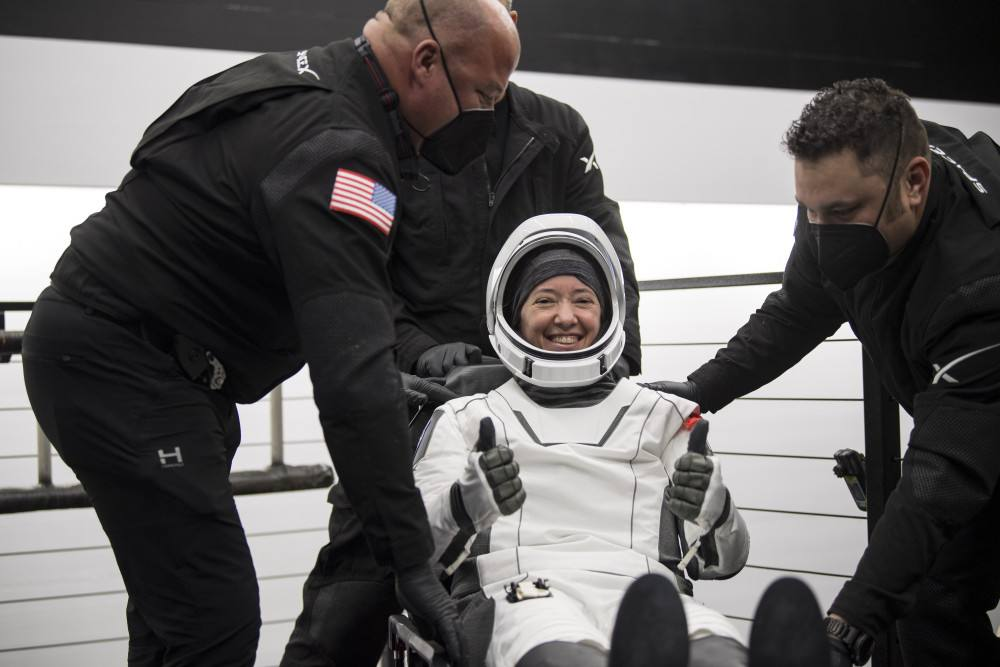

发布时间: 11-09 19:32 中国青年网官方帐号
当地时间11月8日晚，国际空间站4名宇航员搭乘美国太空探索技术公司的载人“龙”飞船安全抵达地球，结束了为期199天的在轨任务。美国航天局网站8日发布消息说，参与代号为“Crew-2”航天任务的4名宇航员分别是美国宇航员沙恩·金布罗和梅甘·麦克阿瑟、日本宇航员星出彰彦和欧洲航天局宇航员托马斯·佩斯凯。美国东部时间8日22时33分（北京时间9日11时33分），他们搭乘的载人“龙”飞船溅落在佛罗里达州附近的墨西哥湾内。在溅落点附近等待的回收船负责对飞船进行打捞和安全回收。飞船被吊上甲板后，4名宇航员将立即出舱并接受医学检查。
此次返航标志着载人“龙”飞船第二次为国际空间站运送轮换宇航员任务的结束。金布罗、麦克阿瑟、星出彰彦和佩斯凯4人搭乘的载人“龙”飞船于今年4月23日从佛罗里达州肯尼迪航天中心发射，4月24日与国际空间站“和谐”号节点舱顺利对接。在为期6个多月的在轨任务中，4名宇航员开展了一系列科学调查、技术演示和设备维护活动等。此外他们还进行了4次太空行走和多次面向公众的在轨实验。4人返航后，国际空间站上只剩一名美国宇航员和两名俄罗斯宇航员。“龙”飞船是美国首个由私营企业建造并运送宇航员往返空间站的载人飞船，也是自美国航天飞机之后首个获美航天局认证的常规运送宇航员往返空间站的新型载人飞船。据美国航天局与太空探索技术公司的合同，载人“龙”飞船总共要执行6次商业载人航天任务。第三次任务预计将于11月10日晚发射。